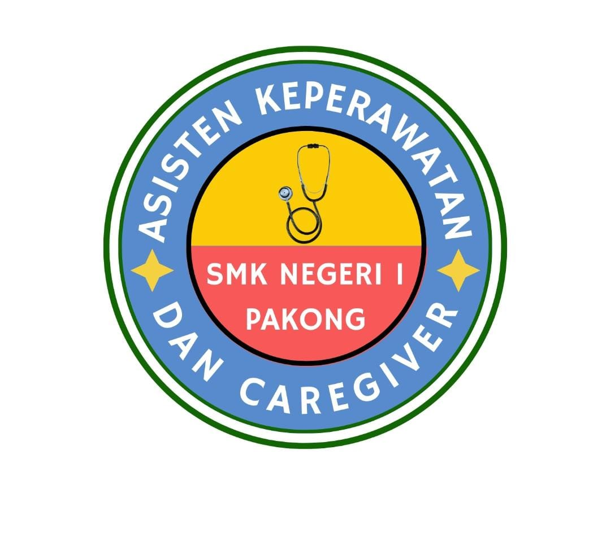

LPKC
SMKN 1 PAKONG

PROFIL LPKCPusat pembelajaran dan praktik peserta didik SMKN 1 Pakong.
LPKC SMKN 1 Pakong merupakan pusat pembelajaran dan praktik peserta didik yang dirancang untuk mendukung pengembangan pengetahuan, keterampilan, dan sikap profesional di bidang kesehatan.
Melalui pembelajaran digital dan kegiatan praktik, peserta didik diarahkan untuk menjadi tenaga kesehatan yang terampil, peduli, disiplin, dan berintegritas.
Menjadi pusat pembelajaran dan praktik yang mendukung terwujudnya peserta didik bidang kesehatan yang kompeten, profesional, peduli, dan berintegritas.
Meningkatkan pemahaman peserta didik terhadap ilmu kesehatan.
Mengembangkan keterampilan melalui kegiatan praktik.
Membentuk sikap peduli, disiplin, bertanggung jawab, dan berintegritas.